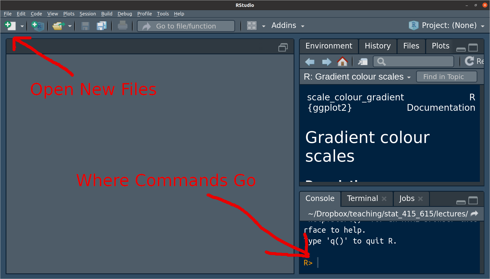
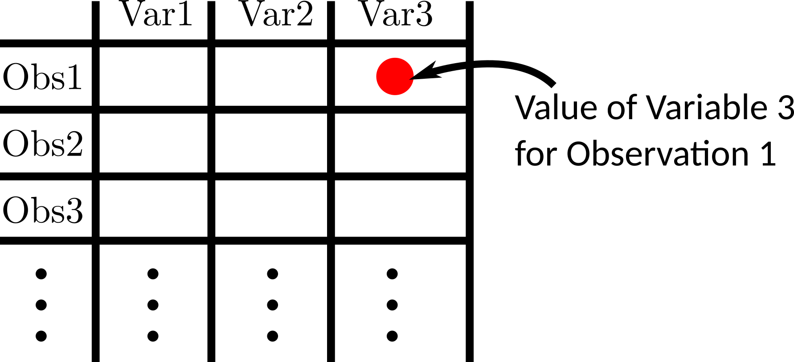

R is a statistical programming language designed to analyze data.
This is not an R course. But you need to know some tools to summarize/plot/model data.
R is free, widely used, more generally applicable (beyond linear regression), and a useful tool for reproducibility. So this is what we will use.
Python would have been a good choice too, but you can learn that in the machine learning course (STAT 427/627).
Install here R : https://cran.r-project.org/
Install R Studio here: https://www.rstudio.com/
NOTE: R is a programming language. R Studio is an IDE, a program for interacting with programming language (specifically R in this case). Thus, on your resume, you should say that you know R, not R Studio.
I cannot teach you everything there is to know in R. When you know the name of a function, but don’t know the commands, use the help() function. For example, to learn more about log() type
help(log)Alternatively, if you do not know the name of the function, you can Google the functionality you want. Googling coding solutions is a lot of what real data scientists do. Just append what you are Googling with “in R”. So, for example, “linear mixed effects models in R”.
When you first open up R Studio, it should look something like this

The area to the right of the carrot “>” is called a prompt. You insert commands into the prompt.
You can use R as a powerful calculator. Try typing some of the following into the command prompt:
3 * 7
9 / 3
4 + 6
3 - 9
(3 + 5) * 6
3 ^ 2
4 ^ 2R consists of two things: variables and functions (computer scientists would probably disagree with this categorization).
A variable stores a value. You use the assignment operator “<-” to assign values to variables. For example, we can assign the value of 10 to the variable x.
x <- 10=, and I think there is nothing wrong with that. But for some reason the field has decided to only use <-, so you should too.Whenever we use x later, it will use the value of 10
x## [1] 10This is useful because you can reuse this value over and over again:
y <- 0
x + y
x * y
x / y
x - yTo assign a “string” (a fancy way to say a word) to x, put the string in quotes. For example, we can assing the value of "Hello World" to x.
x <- "Hello World"
x## [1] "Hello World"Functions take objects (such as numbers or variables) as input and output new objects. Let’s look at a simple function that takes the log of a number:
log(x = 4, base = 2)The inputs are called “arguments”. Generally, every function will be for the form:
function_name(arg1 = val1, arg2 = val2, ...)If you do not specify the name of the argument, R will assume you are assigning in their order.
log(4, 2)You can change the order of the arguments if you specify them.
log(base = 2, x = 4)To see the list of all possible arguments of a function, use the help() function:
help(log)In the help file, there are often default values for an argument. For example, the following indicates the the default value of base is exp(1).
log(x, base = exp(1))This indicates that you can omit the base argument and R will assume that it should be exp(1).
log(x = 4, base = exp(1))## [1] 1.386log(x = 4)## [1] 1.386If an argument does not have a default, then it must be specified when calling a function.
Type this:
log(x = 4,The “+” indicates that R is expecting more input (you forgot either a parentheses or a quotation mark). You can get back to the prompt by hitting the ESCAPE key.
A package is a collection of functions that don’t come with R by default.
There are many many packages available. If you need to do any data analysis, there is probably an R package for it.
Using install.packages(), you can install packages that contain functions and datasets that are not available by default. Do this now with the tidyverse package:
install.packages("tidyverse")You will only need to install a package once per computer. Once it is installed you can gain access to all of the functions and datasets in a package by using the library() function.
library(tidyverse)You will need to run library() at the start of every R session if you want to use the functions in a package.
When I want to write the name of a function, I will write it like this().
The fundamental unit object of data analysis is the data frame.
A data frame has variables in the columns, and observations in the rows.

R comes with a bunch of famous datasets in the form of a data frame. Such as the mtcars dataset.
data("mtcars")
mtcars## mpg cyl disp hp drat wt qsec vs am gear carb
## Mazda RX4 21.0 6 160.0 110 3.90 2.620 16.46 0 1 4 4
## Mazda RX4 Wag 21.0 6 160.0 110 3.90 2.875 17.02 0 1 4 4
## Datsun 710 22.8 4 108.0 93 3.85 2.320 18.61 1 1 4 1
## Hornet 4 Drive 21.4 6 258.0 110 3.08 3.215 19.44 1 0 3 1
## Hornet Sportabout 18.7 8 360.0 175 3.15 3.440 17.02 0 0 3 2
## Valiant 18.1 6 225.0 105 2.76 3.460 20.22 1 0 3 1
## Duster 360 14.3 8 360.0 245 3.21 3.570 15.84 0 0 3 4
## Merc 240D 24.4 4 146.7 62 3.69 3.190 20.00 1 0 4 2
## Merc 230 22.8 4 140.8 95 3.92 3.150 22.90 1 0 4 2
## Merc 280 19.2 6 167.6 123 3.92 3.440 18.30 1 0 4 4
## Merc 280C 17.8 6 167.6 123 3.92 3.440 18.90 1 0 4 4
## Merc 450SE 16.4 8 275.8 180 3.07 4.070 17.40 0 0 3 3
## Merc 450SL 17.3 8 275.8 180 3.07 3.730 17.60 0 0 3 3
## Merc 450SLC 15.2 8 275.8 180 3.07 3.780 18.00 0 0 3 3
## Cadillac Fleetwood 10.4 8 472.0 205 2.93 5.250 17.98 0 0 3 4
## Lincoln Continental 10.4 8 460.0 215 3.00 5.424 17.82 0 0 3 4
## Chrysler Imperial 14.7 8 440.0 230 3.23 5.345 17.42 0 0 3 4
## Fiat 128 32.4 4 78.7 66 4.08 2.200 19.47 1 1 4 1
## Honda Civic 30.4 4 75.7 52 4.93 1.615 18.52 1 1 4 2
## Toyota Corolla 33.9 4 71.1 65 4.22 1.835 19.90 1 1 4 1
## Toyota Corona 21.5 4 120.1 97 3.70 2.465 20.01 1 0 3 1
## Dodge Challenger 15.5 8 318.0 150 2.76 3.520 16.87 0 0 3 2
## AMC Javelin 15.2 8 304.0 150 3.15 3.435 17.30 0 0 3 2
## Camaro Z28 13.3 8 350.0 245 3.73 3.840 15.41 0 0 3 4
## Pontiac Firebird 19.2 8 400.0 175 3.08 3.845 17.05 0 0 3 2
## Fiat X1-9 27.3 4 79.0 66 4.08 1.935 18.90 1 1 4 1
## Porsche 914-2 26.0 4 120.3 91 4.43 2.140 16.70 0 1 5 2
## Lotus Europa 30.4 4 95.1 113 3.77 1.513 16.90 1 1 5 2
## Ford Pantera L 15.8 8 351.0 264 4.22 3.170 14.50 0 1 5 4
## Ferrari Dino 19.7 6 145.0 175 3.62 2.770 15.50 0 1 5 6
## Maserati Bora 15.0 8 301.0 335 3.54 3.570 14.60 0 1 5 8
## Volvo 142E 21.4 4 121.0 109 4.11 2.780 18.60 1 1 4 2You can explore these in a spreadsheet format using View() (note the capital “V”).
View(mtcars)Most datasets will nead to be loaded into R. To do so, we will use the {readr} package.
library(readr)The only function I will require you to know from this package is read_csv(), which loads in data from a CSV file (“Comma-separated values”), a very popular format for storing data.
If you have the CSV file somewhere on your computer, then specify the pack from the current working directory, and assign the data frame to a variable.
For other file formats, you need to use other functions, such as read_tsv(), read_table(), read_fwf(), etc. I will try to make sure read_csv() works for all datasets in this course.
You will need to know just a few data frame manipulations, which we will perform using the {dplyr} package.
library(dplyr)Use the mutate() function from the {dplyr} package to make variable transformations.
Use glimpse() to get a brief look at the data frame.
Use View() to see a spreadsheet of the data frame (never put this in an R Markdown file). Note the capital “V”.
Use rename() to rename variables.
Use filter() to remove rows.
Here is the list of basic R stuff I expect you to know off the top of your head.
help(): Open help file.install.packages(): Install an external R package.library(): Load the functions of an external R package so you can use them.<-: Variable assignment.+, -, /, *: Arithmetic operations.^: Powers.sqrt(): Square root.log(): Log (base e).$: Extracting a variable from a data frame.View(): Look at a spreadsheet of data.head(): See first six elements.{readr}:
read_csv(): Loading in tabular data.{dplyr}:
glimpse(): Look at a data frame.mutate(): Variable transformation.rename(): Variable renaming.{ggplot2}
qplot(): Make a histogram or scatterplot.